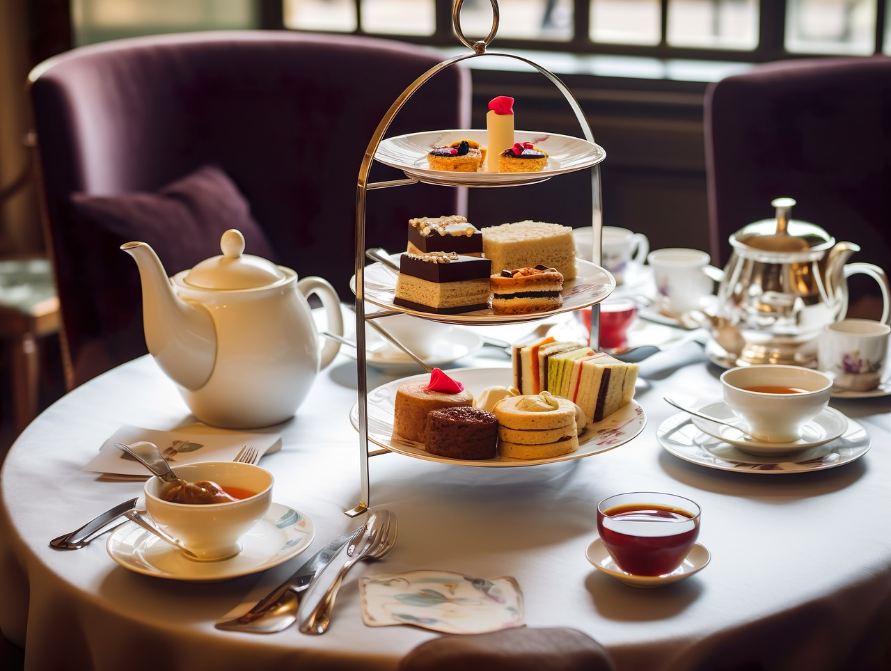
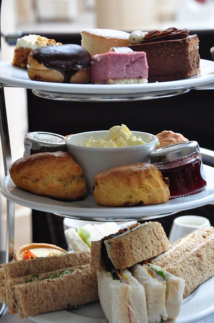
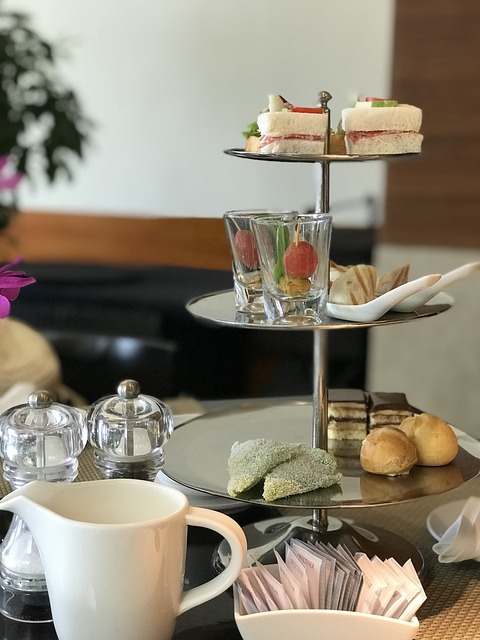

Food

Seasonally
季節のアフタヌーンティー-
Sweets
スイーツ -
あまおう苺のショートケーキ
木苺とカシスとクランベリーのゼリー
ラズベリーのタルト
ピスタチオのスフォリアテッラ
-
Scone
スコーン -
ストロベリーとルビーチョコレート
ブルーベリー
プレーン
-
Savory
セイボリー -
ローストビーフバケットサンド バルサミコベリーソース
カナッペ サスティナブルサーモンとアボカドのタルタル
レーズンとアーモンド入りキャロットラペ
いちごとモッツァレラチーズ 生ハムのカプレーゼ
ビーツと豆乳のポタージュ
Seasonless
通年のアフタヌーンティー-
Sweets
スイーツ -
ヴィクトリアスポンジ
シードケーキ
トライフル
ショートブレッド
アップルシナモントフィー
-
Scone
スコーン -
チョコチップスコーン
全粒粉セサミ
プレーン
-
Savory
セイボリー -
キューカンバーサンドウィッチ
スモークサーモンサンドウィッチ
ブリティッシュパイ
スコッチエッグ
グリーンピースのポタージュ

Tea
INDIA
インド-
* ASSAM
アッサム -
ミルクティーの最良品種
強い甘味とコクがあり、芳醇な香りがします
しっかりした味わいなので、ミルクティー向きです
セカンドフラッシュがおすすめです -
CHAI
チャイ -
アッサムをベースにした煮出しミルクティー
シナモン、カルダモンなどのスパイスと
たっぷりの砂糖を加えるのが本場流ですです
ノンジュガーでも抜群の風味 -
* DARJEELING
ダージリン -
紅茶のシャンパンと評される「世界三大紅茶」
極上のマスカットフレーバーで、爽やかな味わいです
収穫時期によって香りや味の変化がはっきりしています
ストレート、ミルクティーがおすすめです -
* NILGIRI
ニルギリ -
誰もが美味しいと思える風味で、親しまれています
渋みが少なく、すっきりした穏やかな味わいと、
ほのかな甘い香りの余韻が特徴で、和洋問わず、
食事やスイーツにも合わせやすいです -
* SIKKIM
シッキム -
ダージリンに似た「まぼろしの紅茶」
極めて生産量が少ないため「まぼろし」と呼ばれています
ダージリンよりも渋みが少なく、繊細な花のような香り、
優しい甘さとまろやかなコク、爽やかな後味が特徴です
CEYLON
セイロン-
* Dimbula
ディンブラ -
バランスがとれた紅茶らしい「紅茶の優等生」
フローラルともフルーティーとも感じる甘い香り、
程よいコク、クセもなく上質で味わい豊かです
ストレート、ミルク、アイスでもお楽しみいただけます -
* Kandy
キャンディ -
セイロンティーのはじまり、紅茶初心者にもおすすめ
控えめな香り、渋みの少ないマイルドな味わいのため、
ブレンドティーのベースとして重宝されています
夏にアイス・レモンティーとして楽しむと最高です -
* Nuwara eliya
ヌワラエリア -
セイロン紅茶の「高級品」
優雅でデリケートな花の香りが特徴で、
適度な渋みがあるため、緑茶に近いです
最適な楽しみ方はストレートになります -
* Ruhuna
ルフナ -
飲みやすいセイロンティー唯一の個性派
独特なモルティーさ、黒蜜に似た甘い香りを合わせもち、
重厚なコクがありながら、渋みが少ない味わいです
ミルクティーに砂糖を加える楽しみ方が一般的です -
* Uva
ウバ -
黄金の輪を描く「世界三大紅茶」
バラやスズランのような甘く刺激的な香りと
爽やかでキレのある後味が特徴的です
良質な茶葉を上手に注ぐと現れる「ゴールデンリング」が見られます
CHAINA
中国-
Jasmine Tea
ジャスミン茶 -
「花茶の女王様」といわれる香り高い中国茶
緑茶にジャスミンの香りをつけたフレーバーティーで、
華やかで濃厚な存在感ある甘い香りがします
-
Keemun
キームン -
生産量が極めて少ない「世界三大紅茶」
バラやランのような華やかな香りと、
独特なスモーキーさあるのが特徴で、
渋みの少ない穏やかな口当たりです -
* Oolong Tea
ウーロン茶 -
発酵を途中で止めた、半発酵状態の緑茶「青茶」
発酵した褐色と発酵していない緑色が混じっています
生産地によって異なる深みとある味と香りが特徴です
鉄観音、凍頂、水仙はじめ常時５種類ご用意しております
JAPAN
日本-
* Sencha
煎茶 -
爽やかで透明感のある風味と緑色
甘味、うま味、渋味、苦味がバランスよい日本茶
静岡県の契約茶園にある専用茶畑でつくられた
オリジナル茶葉でお楽しみいだたけます -
* Hojicha
ほうじ茶 -
苦味、渋味が少ない「焙じた緑茶」
赤茶色になるまで強火で炒った緑茶です
炒ったことによるすっきりした味わいと、
芳ばしい香りが特徴で、飲みやすく人気があります
加賀棒茶はじめ常時３種類ご用意しております -
* Matcha
抹茶 -
国内外で大人気の日本茶・日本食
新芽を精製選別、加工した良質な茶葉「碾茶」を
石臼挽きした微粉末で、茶の栄養はもちろん
緑茶よりも強い甘味とうま味、深いコクを味わえます
京都府・宇治市、愛知県・西尾市の２種類ございます
BLEND
ブレンド-
English Breakfast
イングリッシュブレックファースト -
紅茶愛飲国の目覚めの一杯
アッサムとディンブラをブレンドしました
イギリスやアイルランドはミルクティーを愛飲しています
たっぷりのミルクで飲まれるのでミルクや甘みに負けない
いきいきとした力強さと、豊かな味わいのブレンドです
-
ROYAL
ロイヤル -
国王エドワード７世を象徴するブレンドティー
アッサムとセイロンをブレンドしました
芳潤な香りとほどよく調和した酸味、コク、苦みがあり、
蜂蜜やモルトのような風味が親しまれています -
Original
オリジナル -
Seasonlessに合わせたブレンドです
Seasonlessで提供される食事、スコーン、スイーツと
お楽しみいただけるようにブレンドしております -
SEASON
シーズン -
Seasonallyに合わせたブレンドです
Seadonallyで提供される食事、スコーン、スイーツと
お楽しみいただけるようにブレンドしております -
Cocktail
カクテル -
お客様の気分に合わせたオーダーメイドブレンド
ご注文後、１杯ずつブレンドいたします
お客様のその日の気分や体調、欲しい変化に合わせ、
ティーマスターが香りや味わいを作っていきます
Flavour
フレーバー-
Apple
アップル -
上品な、おもてなしの一杯
ほどよいコク深さのスリランカ紅茶と、
爽やかで優しいリンゴの香りを合わせました
穏やかながらも、飲みごたえがあるため、
雰囲気を盛り上げるフレーバーとして長年愛されています
-
Caramel
キャラメル -
ミルキーでまろやかな甘みのキャラメルを再現
ほどよいコクと渋みの少ないスリランカ紅茶と、
奥行きのある豊かで甘いキャラメルの香りを合わせました
ゆったりと過ごしたいときの、くつろぎの香りです -
Earl Gray
アールグレイ -
爽やかで上品な、くつろぎティータイム
渋みが少なく、すっきりしたスリランカ紅茶と、
ベルガモットの爽やかでフローラルな香りを合わせました
優美でバランスがとれた味わいで、リフレッシュできます -
Ginger Honey
ジンジャーハニー -
対照的な組み合わせの新感覚
スパイシーで引きしまる生姜の香りと、
フローラルさも感じられる濃厚な蜂蜜の香を、
穏やかなバランスのスリランカ紅茶に合わせました
気分を爽やかに、元気が出るフレーバーです
-
Mandarin
マンダリン -
心を和ませるマンダリンオレンジ
ジューシーで甘酸っぱいマンダリンオレンジの香りと、
軽やかな味わいのヌワラエリヤを合わせました
柑橘系の中でも、心を和ませる効果が高いマンダリン
ぜひ、特別なティータイムの一杯に -
Peach
ピーチ -
世界中で広く親しまれるピーチの芳香
甘さを引き立てる豊かな味わいのスリランカ紅茶と、
みずみずしく、まろやかなピーチの香りを合わせました
ビターめの焼き菓子やナッツを使ったスイーツで、
バランスの良いハーモニーをお楽しみいただけます -
Rose
ローズ -
時代を超えて愛されるバラをまとう
すっきりした口当たりのヌワラエリヤをベースに、
ロマンチックな芳香のバラを合わせました
上品で魅力的な味わいが特徴です
Herb
ハーブ-
Chamomile
カモミール -
ヨーロッパで長年愛されるリラックス効果
リンゴやパイナップルのような甘くやさしい香りで、
口いっぱいに広がるまろやかな甘味が特徴です
心を落ち着かせる効果があります
-
Peppermint
ペパーミント -
爽やかな風味で、リフレッシュタイム向き
ペパーミントから抽出されるメンソールの芳香が、
気分転換にとても向いています
食後のお口をリセットしたいときにおすすめです -
Rooibos
ルイボス -
どんな食事やスイーツにも合う「テーブルドリンク」
南アフリカ生まれの、世界樹で愛されるハーブで、
心地よい香ばしさとまろやかな味わいが特徴です -
Rosehip AND Hibiscus
ローズヒップハイビスカス -
健康と美容の味方
ビタミンCの爆弾と言われるほどビタミンCが豊富で、
個性的な甘酸っぱい香りが特徴的です
砂糖や蜂蜜を足すことにより、飲みやすくなります
鮮やかなルビーレッドの水色で気分が上昇します
-
* Attention *
お申し付けください -
当ティールームでは、カップでのご提供となります。
ポット提供も可能ですので、お申し付けください。
*印について
収穫時期や生産地・茶園別に常時2種類以上ご用意。
紅茶につきまして、より皆様にお楽しみいただくため、
ミルク・レモンをお付けすることが可能です。
また、水出しのアイスティーもご用意いたしております。
各種のおすすめについてはスタッフまでお尋ねください。
COFFEE
-
Blue Mountain
ブルーマウンテン -
HOT ／ ICE
誰でも一度は聞いたことがある、「コーヒーの王様」
上品な香り、ほどよい酸味と苦味、軽めのコクが特徴です
標高800〜1200mにある指定エリアで栽培され、
徹底された品質管理とブレンド基準をもつ高級品種です
-
Brazil
ブラジル -
HOT ／ ICE
他のコーヒーを評価する基準
ナッツやチョコレートのような甘い香り
酸味はやわらかく、全体的に軽やかな味わいが特徴です
香り・コク・苦味すべてのバランスがととのっています
-
Columbia
コロンビア -
HOT ／ ICE
初心者にも飲みやすく、深煎り好きに高い人気を誇ります
南国を感じられるフルーティーな香り、濃厚な甘さ、
強いコクと苦味がありながらもまろやかなため、
ブレンドやエスプレッソに用いられることが多いです
-
Guatemala
グアテマラ -
HOT ／ ICE
ブレンドコーヒーのベースとしても人気
リンゴのようなフルーティーな酸味と、
フローラルな香り、濃厚なコクのあと、
チョコレートやナッツのような甘さの上品な後味です
-
Killimanjaro
キリマンジャロ -
HOT ／ ICE
上質な酸味と重厚なコク 野生味あふれる味わい
収穫後の豆からでも感じられるほど、強い酸味、
柑橘や花を想像させる存在感の強い甘酸っぱい香り、
しっかりとしたコクと、雑味のない後味が人気です
-
Mandheling
マンデリン -
HOT ／ ICE
深煎りに最適で、日本で根強い人気ある品種
ハーブやシナモンのような風味、ほろ苦さと控えめな酸味、
重厚なコクと強めの苦味、まろやかな飲み心地です
-
Mocha
モカ -
HOT ／ ICE
上品で魅力的な「コーヒーの貴婦人」
芳醇な甘い香り、柑橘に似た爽やかな酸味が特徴です
カフェオレ、カフェラテがおすすめの飲み方です -
Toraja
トラジャ -
HOT ／ ICE
まぼろしのグルメコーヒー
スモーキーやクリーミーとも評される独特な香り、
軽めの酸味、フルーツのようなさっぱりした甘味ですが、
力強いコクが特徴で、ギャップがあります -
Cafe au lait
カフェオレ -
HOT ／ ICE
フランス生まれ コーヒー：ミルクは１：１
濃いめのドリップコーヒーと温めたミルクでお作りします
ミルクの甘さとまろやかさがやさしく感じられます
お好きな品種でお作りいたします
詳しくはスタッフまでお尋ねください -
Cafe latte
カフェラテ -
HOT ／ ICE
イタリア生まれ コーヒー：ミルクは１：４
蒸気で抽出する濃厚なエスプレッソコーヒと、
同じく蒸気で温めたスチームミルクでお作りします
バリスタの気まぐれでラテアートがお楽しみいただけます
お好きな品種でお作りいたします
詳しくはスタッフまでお尋ねください -
ORIGINAL
オリジナル -
HOT ／ ICE
バリスタが選りすぐった数種類の豆で独自ブレンド
全体的にまろやかですが、酸味が特徴的です
香りは柑橘系やベリー系を感じるフルーティーで、
後味は、酸味から苦味も含まれています
-
SEASON
シーズン -
バリスタが季節ごとに選りすぐった２種類でブレンド
春・夏は水出しアイスコーヒー
秋・冬はホットで、カフェオレやカフェラテでも
お楽しみいただけます
詳しくはスタッフまでお尋ねください
Original
Room Made
当ティールーム・オリジナル・ドリンク-
Cocoa
ココア -
HOT ／ ICE
シェフ、パティシェが選び抜いたカカオパウダーを使用
フルーティーさを感じられるカカオの豊かな香り、
ほろ苦さで余韻を残す、大人のココアをお楽しみください -
Coke
コーク -
シナモン、スターアニス、カルダモン、クローブ、
ジンジャー、ブラックペッパー、バニラビーンズ
7種類のホールスパイスと、レモン、
低GIのアガペシロップを煮詰めて作ったクラフトコーラ
芳醇なスパイスの香りと、爽やかな飲み心地です -
Ginger ale
ジンジャーエール -
HOT ／ ICE
ショウガ、トウガラシ、独自ブレンドしたハーブを
シロップに漬け込んだコーディアルを炭酸水やお湯で希釈
スパイシーで爽やかな甘さがクセになります -
Lemonade
レモネード -
HOT ／ ICE
砂糖の代わりに低GIのアガペシロップ、マヌカハニー、
レモン、少量のカルダモンで漬けたレモンシロップを
微炭酸水やお湯で希釈
レモンシロップの甘酸っぱさとほろ苦み、
カルダモンの甘くエキゾチックな余韻を感じられます
-
Tea Soda
ティーソーダ -
お客様のお好きな紅茶を炭酸水で割ります
お好みでカットレモンもご用意しております
紅茶の豊かな風味と炭酸の爽やかさは、
お食事にもスイーツにも合います
ぜひ一度お試しください
詳しくはスタッフまでお尋ねください -
Tea float
ティーフロート -
バニラビーンズたっぷりのアイスクリームと
極上のアイス・ロイヤルミルクティーを合わせました
ドリンクではなく、スイーツに近いメニューにです
ティーフロートの紅茶はお客様のご希望で変更可能
あなただけのティーフロートをぜひ見つけてください
詳しくはスタッフまでお尋ねください -
Coffee float
コーヒーフロート -
バニラビーンズたっぷりのアイスクリームを
水出しアイスコーヒーに浮かべました
アイスクリームの甘いまろやかさと
コーヒーフロート専用の深煎りブレンドのコク
どちらもバランスよく味わえます
詳しくはスタッフまでお尋ねください -
Juice
ジュース -
生搾りジュースをご用意しております
ご注文後、ひとつひとつお作りいたします
Apple リンゴ
Grape ブドウ
Orange オレンジ